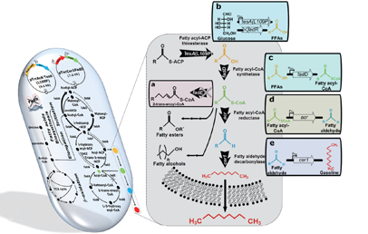
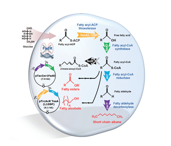

Report by Subjects
Report by Subjects
KAIST RESEARCH ACHIEVEMENTS
Microbial Production of Short-chain Alkanes
(Department of Chemical & Biomolecular Engineering) Sang Yup Lee
Summary
In 2037, human beings will be faced with the depletion of fossil fuels. Due to the increasing concerns on climate change and depletion of fossil resources caused by increasingly rapid consumption, development of bio-based processes for the production of fuels and chemicals from renewable resources has attracted great interest. Although it is no longer possible to utilize fossil resources, bio-based production of chemicals and fuels allows us to sustain our daily life as before.
R&D Report

Conventional, petroleum-based, chemical industry is now facing its limit due to the rapid depletion of fossil resources and environ-mental problems and needs to be transformed into a bio-based industry. Accordingly, metabolic engineering should be performed for the development of superior microbial strains capable of efficiently producing desired chemicals and fuels.

Gasoline, the petroleum-derived oil that is the most widely used fuel for transportation, is a mixture of hydrocarbons, additives, and blending agents. The hydrocarbons, called alkanes or paraffins, is comprised of only hydrogen and carbon atoms. Gasoline has a combination of straight-chain and branched-chain alkanes (hydrocarbons) consisted of 4-12 carbon atoms linked by direct carbon-carbon bonds. Previously, Escherichia coli (E. coli) was engineered to produce long-chain alkanes, which are comprised of 13-17 carbon atoms, suitable for replacing diesel. However, there has been no report on the microbial production of short chain alkanes, a possible substitute for gasoline. The fatty acid metabolism was engineered to provide fatty acid derivatives that are shorter than normal metabolites, and a novel synthetic pathway was introduced for the biosynthesis of short-chain alkanes.
Expectation Effectiveness
The present study resulted in the development of the platform E. coli strain capable of producing gasoline for the first time. Furthermore, this platform strain, if desired, can be modified to produce other products such as short-chain fatty esters and short-chain fatty alcohols from renewable biomass.
Research Funding
ㆍThis work was supported by the Advanced Biomass Research and Development Center of Korea through the Global Frontier Research Program of the Ministry of Science, ICT and Future Planning (MSIP) through the National Research Foundation (NRF). Systems metabolic engineering work was supported by the Technology Development Program to Solve Climate Changes on Systems Metabolic Engineering for Biorefineries by MSIP through NRF
Research Results
ㆍPatents Pending : seven patents.
ㆍRelated Works : Exhibition at celebration of Daedeok Innopolis 40th anniversary.
ㆍChoi, Y.J., Lee, S.Y., "Microbial production of short-chain alkanes", Nature, 502(7472): 571-574 (2013. 10) (Impact Factor = 38.597)
ㆍSelected as the Journal Cover paper of Nature (2013. 10)
ㆍSelected as Faculty of 1000 Prime (F1000Prime)
ㆍSelected as one of the KAIST Top 10 research results
ㆍSelected as one of the Top 5 Korean bio-socio-ecomomic research
ㆍFeatured by the Wall Street Journal, Aljazeera and hundreds of mass media.